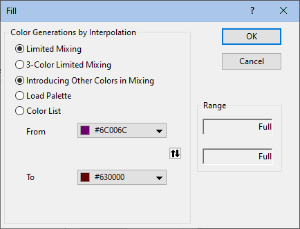
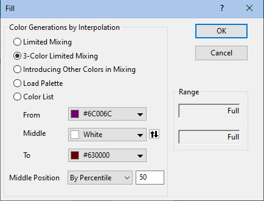
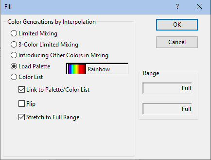
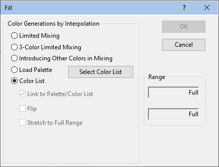

Diese Registerkarte ist verfügbar, wenn die Farbeigenschaft der Zeichnung auf die Werte einer Spalte oder einer Spaltenbeschriftungszeile abgebildet wurde. Es bietet Bedienelemente zum Anpassen von Ebenen, Füllfarbe und Neuskalierungsmodus.
Hinweis: Wenn Sie Hintergrundfarben auf Layer angewendet haben, wird bei Grafiken mit mehreren Layern diese Registerkarte Farbpalette auf Seitenebene gezeigt, damit Sie die Farbpalette für die Hintergrundfarben der Layer benutzerdefiniert anpassen können.
| Ebene |
Origin zeigt einen Standardsatz von Ebenen an, indem es den Minimal- und den Maximalwert in Y- und Z-Richtung sucht und dann ein Inkrement berechnet, das acht Farbebenen erstellt. Zwei zusätzliche Ebenen werden hinzugefügt, um Werte darzustellen, die kleiner sind als das Minimum oder größer als der maximale Wert. Einzelne Werte können in der Liste durch einen Doppelklick bearbeitet werden. Sie können auch auf die Überschrift Ebene klicken, um den Dialog Ebenen festlegen zu öffnen. Sie können dann die Ebenen als eine Gruppe bearbeiten. |
|---|---|
| Füllung |
Origin ist standardmäßig darauf eingestellt, eine Farbliste zu verwenden, die Gelb und Grün zwischen den Grenzen von Rot und Blau einführt. Einzelne Farben können in der Liste durch Klicken bearbeitet werden, oder Sie können auf den Header Füllung klicken, um den Dialog Füllung zu öffnen, auf dem Sie die Füllmethode und die Eigenschaften als Gruppe bearbeiten können. |
Um einen Ebenenwert zu bearbeiten:
Um den vollständigen Bereich der Ebenen zu bearbeiten:
Um die Ebenen für Minimum oder Maximum benutzerdefiniert anzupassen:
oder
oder
Wählen Sie den Skalierungstyp. Einzelheiten zum Skalierungstyp finden Sie hier. Außerdem lässt sich das Intervall zwischen den Ebenen angeben oder die Anzahl der Hauptebenen und Nebenebenen manuell festlegen.
Sie können auch mit dem Element Erste Ebene den Wert der ersten Hauptebene festlegen.
|  |  |
|  |  |
| Beschränkte Mischung | Wählen Sie die Option Beschränkte Mischung, um eine Füllfarbe für die minimale Ebene (Von) und eine für die maximale Ebene (Bis) auszuwählen und die Ebenen zwischen diesen beiden Endpunkten mit einer linearen Mischung der beiden Farben zu füllen. |
|---|---|
| Farben zu Mischung hinzufügen | Wählen Sie diese Option, damit Origin automatisch komplementäre Farben in die Mischung aufnimmt. Diese Option bietet Füllfarben, die eindeutiger sind als die der Beschränkten Mischung. |
| Mischung mit 3 Farben festlegen |
Verwenden Sie diese Option, um eine Füllfarbe für die Ebene des Minimums (Von), eine Füllfarbe für die mittlere Ebene (Mitte) und eine Füllfarbe für die Ebene des Maximums (Bis) auszuwählen und um einen Zellenbereich mit einer Abstufung von drei Farben zu füllen.
Legen Sie azßerdem fest, wie die Mittlere Position bestimmt wird:
|
| Palette laden |
Laden Sie die Palette und wenden Sie sie für die Farbfüllungen an. Klicken Sie auf die Schaltfläche Palette auswählen. Sie haben die Auswahl unter 40 Standardpaletten. Außerdem können Sie in der Liste der Paletten zu den benutzerdefinierten Paletten navigieren, indem Sie auf Weitere Paletten... klicken.
|
| Farbliste |
Laden Sie die Farbliste und wenden Sie sie auf Farbfüllungen an. Klicken Sie auf die Schaltfläche Farbliste auswählen. Sie können eine Standardfarbliste oder eine benutzerdefinierte Farbliste.
|
Die Gruppe Bereich zeigt den Bereich der Ebenen an, die von den aktuellen Dialogeinstellungen beeinflusst werden. Standardmäßig registrieren die zwei Bereichsfelder den vollen Bereich.
Verwenden Sie diese Schaltflächen in der Gruppe, um Ebenen einzufügen oder zu löschen.
Um eine Ebene einzufügen:
Um eine Ebene zu löschen:
Es gibt vier Schaltflächen in dieser Gruppe für das Farbabbildungsdesign. Bitte beachten Sie, dass das Kontrollkästchen Nur Ebene und Farben einschließen ausgeblendet und aktiviert ist.
Kopiert die aktuelle Farbabbildung in die Zwischenablage.
Sobald die Farbabbildung in der Zwischenablage zur Verfügung steht, wird diese Schaltfläche zum Einfügen der Farbabbildung aus der Zwischenablage aktiviert, um die aktuelle zu ersetzen.
Speichert die aktuelle Farbabbildung als *.oth-Datei.
Lädt eine Farbabbildung, die als *.oth-Datei gespeichert ist, um die aktuelle zu ersetzen.
In dieser Gruppe können Sie nicht nur den Schwellenwert für fehlende Werte in der Quellspalte oder Spaltenbeschriftungszeile angeben, sondern auch die Art und Weise, mit der Werte gemäß Schwellenwert interpretiert werden. Nachdem Sie die Operatoren in der Auswahlliste ausgewählt haben, können Sie Werte, die größer als/kleiner als/gleich der/dem Schwellenwert sind als fehlende Werte zuweisen. Dies stellt eine Ergänzung des fehlenden Werts in Origin dar, der mit -- angezeigt wird.
Sie können dann auf das Farbfeld klicken, um eine Farbe für diese fehlenden Werte festzulegen.
Mit der Auswahlliste des Reskalierungsmodus' können Sie steuern, ob die Ebenen, die auf den Registerkarten Farbpalette eingerichtet sind, bei Änderung der aktuellen Werte aktualisiert werden.
| Normal |
Origin findet automatisch die Werte für Minimum und Maximum in Ihrem Datensatz und erzeugt dann gleich große Ebenen sowie zugehörige Farben. |
|---|---|
| Manuell |
Die aktuellen Ebenen und deren zugehörige Farben, die auf der Registerkarte Farbpalette angegeben sind, bleiben festgelegt, unabhängig vom Bereich Ihres Datensatzes. Um die Ebenen und die Farben zu ändern, müssen Sie die Einstellungen Ebene und Füllung bearbeiten. |
| Fest von |
Die Ebene für das Minimum bleibt unverändert, unabhängig von den Werten Ihres Datensatzes. |
| Fest bis |
Die Ebene für das Maximum bleibt unverändert, unabhängig von den Werten Ihres Datensatzes. |
| Auto |
Die Farbebenenen und -füllungen werden automatisch neu skaliert, wenn der Datenbereich geändert wird. |